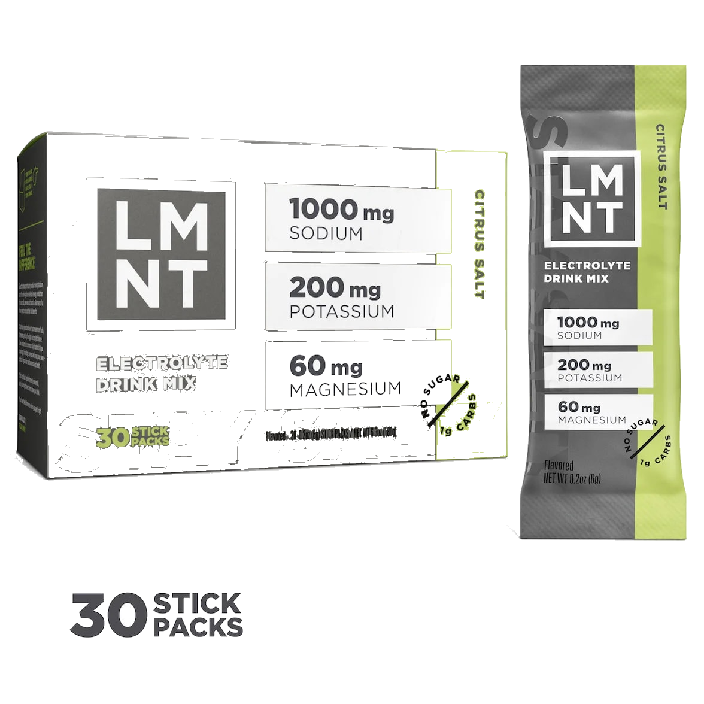

Product imagery supplied by the retailer. Packaging may vary — verify the Supplement Facts panel on the container you receive.
LMNT
Electrolyte Drink Mix
Our analysis — editorial take, not from the label
Sodium-forward design: 1000 mg sodium with zero sugar targets heavy sweat replacement rather than carb-based rehydration.
- Sodium
- 1000 mg
- Potassium
- 200 mg
- Sugar
- 0 g
- Servings
- 30
Price tier: Premium · relative cost per full serving across this database
We don't list dollar prices — they change daily and go stale. Check the live price instead:
View current price Compare all hydration mixesScoop Sense doesn't collect user reviews and won't invent them. Read customer reviews on Amazon
Affiliate links — Scoop Sense may earn a commission at no additional cost to you.
Salty-citrus lineup including Citrus Salt, Watermelon Salt, and Raw Unflavored, sweetened with stevia leaf extract.
Label verified: July 2026 · View label source
Label data
Per full serving · 30 servings per container · from the manufacturer's panel
| Sodium | 1000 mg |
|---|---|
| Potassium | 200 mg |
| Magnesium | 60 mg |
| Sugar | 0 g |
| Sodium (from salt) | 1000 mg |
| Potassium (potassium chloride) | 200 mg |
| Magnesium (magnesium malate) | 60 mg |
| Proprietary blend | No |
Primary label source: LMNT ingredients page (electrolyte amounts per stick) · verified July 2026
Cautions
- 1000 mg sodium per serving — significant if you watch sodium intake
- Talk to your doctor if you take blood-pressure medication
- Formulated for sweat loss, not everyday casual sipping
Product details
Where this label sits
LMNT Electrolyte Drink Mix is one of the hydration mixes in the Scoop Sense database. Every active ingredient on the panel is listed with its own dose — nothing is hidden inside a blend total. It runs 30 servings per container at the full labeled serving. Everything on this page comes from the manufacturer's supplement facts panel as of July 2026 — never from the marketing page.
Key ingredients & studied doses
- Sodium (from salt) · 1000 mg. Sodium is the primary electrolyte lost in sweat and is studied for its role in fluid balance during prolonged sweating.
- Potassium (potassium chloride) · 200 mg. Potassium contributes to normal muscle function and works alongside sodium in fluid balance.
- Magnesium (magnesium malate) · 60 mg. Magnesium plays a role in normal muscle and nerve function.
Flavors & sweetener
Salty-citrus lineup including Citrus Salt, Watermelon Salt, and Raw Unflavored, sweetened with stevia leaf extract.
Who it's best for
Heavy sweaters and low-carb dieters — this is a sodium-forward mix. Derived from the label figures above — not medical advice.
How we log this label
Every entry is built the same way: we read the current supplement facts panel, log each disclosed dose, compare it against the amounts used in published research, flag proprietary blends, and state the cautions plainly. The full methodology explains each step.
This label against the research
How we evaluate labelsEach bar shows the amount commonly used in published human research, and where this label's dose falls against it. Research amounts are context, not a recommendation — they are not doses, and nothing here is medical advice.
-
Sodium1000 mg
At or above the studied amount0studied range 300 mg–700 mg1200 mg
Sports-nutrition guidance puts 300–700 mg of sodium per litre of fluid in the range for sustained sweating. Higher-sodium mixes are built for heavy sweat losses, not for casual sipping.
What other people say
Why we don't rate productsTwo different things, side by side: the rating the seller publishes on its own store, and what independent users write in public threads. Scoop Sense writes neither and collects no reviews of its own. Neither is evidence that a product works — they describe what people experienced and expected, not what the research shows.
On the seller's page
4.6 / 5
14,172 ratings
The brand's own storefront, read July 2026. A seller's rating is collected and moderated by the seller — treat it as a marketing figure, not an independent one.
What people actually report
Regulars are loyal to LMNT for taste and its high sodium content but consistently flag the price as steep for what is essentially flavored salt, and a few say electrolyte mixes like LMNT can make them feel worse rather than better.
- negative Price vs. value. Users repeatedly call the packet price steep for what amounts to salt, potassium, and flavoring, and ask around for cheaper alternatives.
- positive Sodium content fits heavy sweaters. Runners and people watching their sodium intake specifically like LMNT for its high salt content per serving compared to lighter mixes.
- negative Can feel worse, not better. A few people say LMNT and similar electrolyte powders left them feeling worse rather than better, suggesting the product isn't universally beneficial.
Read the threads yourself
-
“I've been using LMNT electrolyte powder and they're great, but I'm almost out and I don't want to pay the ridiculous price”
r/HydroHomies thread, 2025 -
“I like LMNT electrolytes packs, as they contain 1000mg of salt and have nice flavor.”
r/HydroHomies thread, 2024 -
“Electrolyte powders like LMNT, Relyte, etc make me feel worse, so does a spark in water intake.”
r/HydroHomies thread, 2024
Common questions about LMNT Electrolyte Drink Mix
How much sodium is in LMNT Electrolyte Drink Mix?
1000 mg per serving, with no sugar. Sodium is the main electrolyte lost in sweat, but needs vary widely with sweat rate and diet — and daily sodium from food counts toward the same total.
Does LMNT Electrolyte Drink Mix disclose every dose?
Yes — the label lists an individual amount for each ingredient, with no proprietary blends. That is what the "label fully disclosed" tag on Scoop Sense means, and it is what lets each dose be compared against the amounts used in published research.